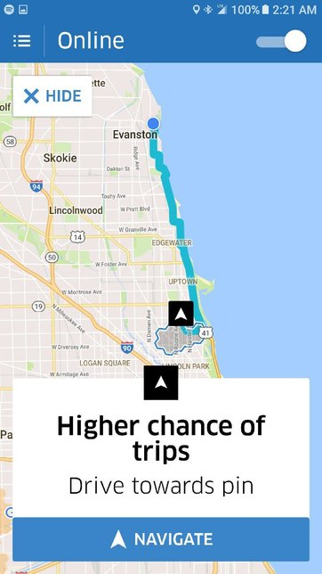
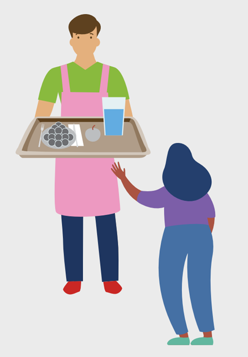

Fondamenti di Economia Comportamentale
#8
novembre 2024
Domanda 1
- Domani devi incontrare unx sconosciutx a Pisa.
Avete deciso di incontrarvi alle 15:00, ma non avete concordato un luogo di incontro. Non avete modo di comunicare.
Dove andresti per massimizzare le tue possibilità di incontrare lx sconosciutx?
Domanda 2
Domani devi incontrare unx sconosciutx a Roma.
Avete deciso di incontrarvi alle 15:00, ma non avete concordato un luogo di incontro. Non avete modo di comunicare.
Dove andresti per massimizzare le tue possibilità di incontrare lx sconosciutx?
Salienza e punti focali
Il un sondaggio informale, il premio Nobel per l’economia Thomas Schelling ha scoperto che molti dei suoi studenti tendevano a rispondere allo stesso modo quando veniva fatta loro questa domanda con riferimento alla città di New York.
La maggior parte rispondeva che avrebbe aspettato sotto l’orologio della Grand Central Station, sperando che l’altra persona avesse avuto la stessa idea.
Salienza e punti focali (cont)
- La Grand Central Station è un punto focale, ovvero la soluzione più saliente al problema di coordinamento degli studenti newyorkesi.
Salienza
La qualità di saltare particolarmente all’occhio o essere facile da ricordare.
Salienza e comportamento del consumatore
Le persone spesso prestano poca attenzione alle proprie scelte di consumo.
Queste scelte tendono a essere guidate dalle caratteristiche del prodotto che attirano l’attenzione del consumatore, ossia dalle caratteristiche salienti del prodotto.
Principale tema di oggi: evidenza sperimentale sul ruolo della salienza.
Salienza e tassazione: evidenza sperimentale
Per il momento concentriamoci sulla tassazione.
Un’ipotesi comune in economia è che gli agenti rispondano a variazioni delle imposte nello stesso modo in cui rispondono a variazioni di prezzo.
È davvero così?
Chetty, Looney, e Kroft (2009) hanno mostrato che le imposte sui beni che vengono incluse nei prezzi esposti (che le persone vedono durante lo shopping, e quindi più salienti) hanno un effetto maggiore sulla domanda dei consumatori rispetto alle imposte che non vengono incluse dei prezzi.
Per leggere l’articolo, clicca QUI.
Salienza e tassazione: evidenza sper. (cont)
L’esperimento è stato condotto in un supermercato nel corso di tre settimane.
In questo supermercato, i prezzi esposti sugli scaffali non comprendono un’imposta sulle vendite del 7,375%.
- Se un prodotto è soggetto all’imposta sulle vendite, questa viene aggiunta al totale solo alla cassa (come avviene nella maggior parte dei negozi al dettaglio negli Stati Uniti).
Per verificare quanto le persone reagiscano a variazioni dell’imposta sulle vendite, Chetty, Looney, e Kroft (2009) hanno posizionato nel supermercato etichette che mostrano il prezzo comprensivo delle imposte.
Salienza e tassazione: evidenza sper. (cont)
- L’intervento non ha modificato il prezzo del prodotto, ma ha cambiato la salienza dell’imposta.
Salienza e tassazione: evidenza sper. (cont)
- Gruppo di trattamento: prodotti con un’etichetta che mostra il prezzo comprensivo dell’imposta.
- Prodotti trattati nel negozio di trattamento
- 1° gruppo di controllo: prodotti esposti nelle stesse corsie in cui sono esposti i prodotti del gruppo di trattamento, ma senza l’etichetta che mostra il prezzo comprensivo dell’imposta.
- Prodotti di controllo nel negozio di trattamento
- 2° gruppo di controllo: prodotti venduti in due negozi in città vicine.
- Prodotti di controllo e trattati nei negozi di controllo
Salienza e tassazione: evidenza sper. (cont)
La domanda dei beni il cui prezzo include l’imposta è diminuita significativamente.
Questa riduzione varia tra il 6% e l’8%, a seconda di quale gruppo di prodotti viene utilizzato per la comparazione.
Salienza e tassazione: evidenza sper. (cont)
Nella seconda parte del loro studio, Chetty, Looney, e Kroft (2009) si sono concentrati sulla domanda di alcolici.
Negli Stati Uniti, l’alcol è soggetto a due imposte:
- Un’accisa inclusa nel prezzo che viene esposto.
- L’imposta sulle vendite, che non è inclusa.
Chetty e i coautori hanno studiato gli effetti di variazioni delle due imposte tra il 1970 e il 2003.
Salienza e tassazione: evidenza sper. (cont)
Risultato: le variazioni dell’accisa hanno un effetto di gran lunga maggiore rispetto alle variazioni dell’imposta sulle vendite.
Perché?
- Intuizione: i clienti si concentrano sul prezzo indicato sull’etichetta, che include l’accisa, e ignorano in gran parte l’imposta sulle vendite, che viene aggiunta alla cassa.
Politiche basate sulla salienza
La salienza può essere utilizzata per incoraggiare comportamenti positivi senza modificare gli incentivi economici?
Per rispondere a questa domanda, introduciamo una nuova definizione.
Architetto delle scelte
Un individuo responsabile di organizzare il contesto in cui le persone prendono decisioni.
Architettura delle scelte
- Esempi:
- Unx manager che progetta il modulo che i nuovi dipendenti compilano per iscriversi al piano sanitario aziendale.
- Unx medicx che descrive ai pazienti i trattamenti disponibili.
- Unx responsabile marketing che progetta strategie di vendita.
- Unx designer di schede elettorali che decide dove posizionare i nomi dei candidati su una pagina.
- Un genitore che spiega le possibili opzioni educative al proprio figlio o figlia.
Nudge
- L’architettura delle scelte, intesa come il contesto in cui vengono prese le decisioni, può essere manipolata per raggiungere un obiettivo desiderato.
Nudge
Un design dell’architettura delle scelte che modifica il comportamento delle persone in modo prevedibile senza vietare alcuna possibilità di scelta o alterare in modo significativo gli incentivi economici (Thaler e Sunstein 2008).
- Per essere considerato un nudge, l’intervento deve essere facile ed economico da evitare.
Nudge (cont)
Un esempio:
- Le persone sono attratte da ciò che è gratuito.
- Amano anche le lotterie, perché sopravvalutano le piccole probabilità positive.
- Se volessimo incoraggiare le persone a usare la bicicletta per andare al lavoro, potremmo iscrivere tutti coloro che ci vanno in bicicletta a una lotteria con la possibilità di vincere un premio in denaro.
Questo intervento è un nudge?
No, perché si basa su incentivi monetari per indurre le persone a cambiare comportamento.
Nudge che influenzano la salienza
I nudge possono essere utilizzati per modificare la salienza di un prodotto o di una sua caratteristica.
Ti viene in mente qualche esempio?
Nudge che influenzano la salienza: prova tu
- Come possiamo spingere le persone a utilizzare i posacenere stradali?
Nudge che influenzano la salienza: prova tu (cont)
Nudge che influenzano la salienza: prova tu (cont)
Prima
Dopo
Nudge che influenzano la salienza: prova tu (cont)
Prima
Dopo

Nudge che influenzano la salienza: prova tu (cont)
Prima
Dopo
Nudge che influenzano la salienza: evidenza sperimentale
- Come utilizzare i nudge per ridurre il consumo di carne delle persone?

Nudge che influenzano la salienza: evidenza sperimentale (cont)
Kurz (2018) ha condotto un esperimento sul campo in due mense universitarie svedesi per testare se i nudge possono aumentare il consumo di cibo vegetariano.
Le due mense erano gestite dalla stessa società e servivano tre piatti caldi: uno vegetariano e due contenenti carne o pesce.
Per leggere l’articolo, clicca QUI.
Nudge che influenzano la salienza: evidenza sperimentale (cont)
I dati di vendita sono stati raccolti con cadenza giornaliera durante l’intero anno accademico 2015-2016.
Tempistica
- Settimane 1-9: Periodo di riferimento baseline (nessun intervento)
- Settimane 10-26: Periodo di intervento
- Settimane 27-39: Periodo di inversione (fine dell’intervento)
Nudge che influenzano la salienza: evidenza sperimentale (cont)
- Nella mensa trattata, la salienza dell’opzione vegetariana è stata aumentata attraverso (1) una variazione dell’ordine dei piatti nel menu e (2) un incremento della visibilità del piatto vegetariano
- L’opzione vegetariana è stata spostata dal centro alla parte superiore del menu.
- Il piatto è stato spostato da dietro il bancone a una posizione più visibile per i clienti.
- L’altra mensa è servita come gruppo di controllo.
Nudge che influenzano la salienza: evidenza sperimentale (cont)
Struttura del menù
| Mensa trattata | Mensa di controllo | |
| Periodo 0 (Baseline) | Posizione 1: Carne 1 Posizione 2: Vegetariano Posizione 3: Carne 2 | Posizione 1: Vegetariano Posizione 2: Carne 1 Posizione 3: Carne 2 |
| Periodo 1 (Intervento) | Posizione 1: Vegetariano Posizione 2: Carne 1 Posizione 3: Carne 2 | Posizione 1: Vegetariano Posizione 2: Carne 1 Posizione 3: Carne 2 |
| Periodo 2 (Invesione) | Posizione 1: Carne 1 Posizione 2: Vegetariano Posizione 3: Carne 2 | Posizione 1: Veg. o Carne 1 Posizione 2: Veg. o Carne 1 Posizione 3: Carne 2 |
Nudge che influenzano la salienza: evidenza sperimentale (cont)
Visibilità
| Mensa trattata | Mensa di controllo | |
| Periodo 0 (Baseline) | Carne 1 più visibile | Tutti e tre ugualmente visibili |
| Periodo 1 (Intervento) | Vegetariano più visibile | Tutti e tre ugualmente visibili |
| Periodo 2 (Inversione) | Carne 1 più visibile | Tutti e tre ugualmente visibili |
Nudge che influenzano la salienza: evidenza sperimentale (cont)
Nudge che influenzano la salienza: evidenza sperimentale (cont)
Il nudge ha incrementato la percentuale di pranzi vegetariani venduti di una media di 6 punti percentuali. L’effetto del trattamento è aumentato gradualmente nel tempo.
Questo cambiamento di comportamento è stato in parte persistente: alla fine del periodo di inversione, la percentuale di pranzi vegetariani venduti è rimasta 4 punti percentuali più alta rispetto a prima dell’intervento.
Kurz (2018) stima che l’intervento abbia ridotto le emissioni di gas serra derivanti dalla vendita di cibo di circa il 5%.
I nudge di Uber
Non tutti i nudge operano sfruttando la salienza.
Molte aziende cercano di spingere i consumatori ad acquistare i loro prodotti e servizi.
Ci sono anche aziende che hanno esteso questi sforzi verso l’obiettivo di far lavorare di più i propri dipendenti.
Ad esempio, Uber ha introddo nella sua app per i conducenti tecniche di nudge basate su videogiochi, grafiche e ricompense non monetarie. Queste tecniche possono indurre i conducenti a lavorare più a lungo e con maggiore impegno, talvolta in orari e luoghi meno remunerativi per loro (Scheiber 2017).
Per leggere l’articolo, clicca QUI.
I nudge di Uber (cont)
- Assegnazione anticipata: un algoritmo che assegna una nuova corsa a un conducente prima che termini quella attuale.
- Riduce i tempi di attesa per i passeggeri…
- …sovrascrivendo l’autocontrollo dei conducenti e inducendoli a rimanere sulla strada più a lungo durante i periodi di maggiore attività.
- Questo meccanismo è simile al meccanismo di riproduzione automatica di Netflix: quando un episodio di una serie sta per terminare, Netflix carica automaticamente il successivo.
- La riproduzione automatica sembra aver favorito l’aumento del fenomeno del binge watching.
I nudge di Uber (cont)
L’app a volte invita i conducenti a premere un grande riquadro se desiderano che l’app li guidi verso un’area dove hanno una “maggiore probabilità” di trovare passeggeri.
Il design del messaggio sembra indicare che i guadagni nell’area suggerita sono maggiori. Tuttavia, ciò non è necessariamente vero.
- L’intento è quello di indurre i conducenti a dirigersi dove Uber desidera, piuttosto che dove sarebbe più redditizio per loro guidare.
I nudge di Uber (cont)
- Il design della schermata rende inoltre il suggerimento più facile da accettare che da rifiutare, perché per rifiutare è necessario premere un piccolo rettangolo nell’angolo in alto a sinistra (questo è un ulteriore nudge)

I nudge di Uber (cont)
Loop ludici: quando i conducenti cercano di disconnettersi, l’app spesso comunica loro che manca solo una determinata somma per raggiungere un importo apparentemente arbitrario per la giornata o per eguagliare i guadagni dello stesso momento della settimana precedente.
Questi messaggi sono pensati per sfruttare la tendenza delle persone a fissare e perseguire obiettivi.
I nudge di Uber (cont)
- L’app mostra inoltre ai conducenti:
- Quante corse hanno effettuato nella settimana corrente
- Quanto denaro hanno guadagnato
- Quale sia la loro valutazione complessiva da parte dei passeggeri.
- Queste metriche possono stimolare lo spirito competitivo e alimentare comportamenti compulsivi simili al gioco.
I nudge di Uber (cont)
- Esempio
- “Ti mancano 6$ per raggiungere 40$ di guadagni netti. Sei sicuro di voler andare offline?”
- Di seguito compaiono due opzioni: “Vai offline” e “Continua a guidare.” Quest’ultima opzione è già evidenziata (questo è un ulteriore nudge).
I nudge sui default
Le persone tendono ad essere guidate dall’inerzia e a scegliere l’opzione che richiede il minimo sforzo.
I possibili motivi includono pigrizia, distrazione e paura.
Spesso le scelte prevedono un’opzione predefinita, cioè un’opzione che verrà selezionata di default se chi decide non compie alcuna azione.
Molte persone tendono ad aderire all’opzione predefinita, a prescindere dal fatto che sia vantaggiosa per loro.
Un architetto delle scelte può influenzare il processo decisionale scegliendo quale sarà l’opzione predefinita.
Nudge sui default
- Un nudge sui default consiste nel rendere una determinata opzione quella di default.
Nudge sui default: provaci tu
Prima
Dopo

Nudge sui default: evidenza sperimentale
Molti americani spendono troppo e risparmiano troppo poco. Nel 2005, il tasso di risparmio privato negli Stati Uniti è diventato negativo per la prima volta dal 1933.
Possibile soluzione: i conti di risparmio pensionistici, che limitano l’accesso ai fondi depositati, possono aiutare alcune persone a superare l’impulso di spendere.
Come possiamo spingere queste persone ad aderire a piani di risparmio?
Una possibilità è quella iscrivere automaticamente i lavoratori a un piano di risparmio, cioè modificare l’opzione predefinita da opt in a opt out.
Nudge sui default: evidenza sperimentale (cont)
Madrian e Shea (2001) hanno esaminato i dati di un’azienda statunitense che l’1 aprile 1998 ha modificato il default e le condizioni per l’iscrizione e l’idoneità al piano di risparmio pensionistico aziendale.
Prima di questa data, i dipendenti potevano iscriversi al piano solo dopo un anno di lavoro e dovevano scegliere esplicitamente di iscriversi.
Dopo la modifica, tutti i dipendenti sono stati considerati idonei all’iscrizione fin dal momento dell’assunzione, e i nuovi dipendenti sono stati iscritti automaticamente al piano a meno che non scegliessero esplicitamente di non aderire.
Per leggere l’articolo, clicca QUI.
Nudge sui default: evidenza sperimentale (cont)
Nudge sui default: evidenza sperimentale (cont)
Dopo che l’opzione predefinita è stata modificata da opt in a opt out, c’è stato un aumento significativo della partecipazione dei dipendenti al piano di risparmio.
Il tasso di partecipazione dei dipendenti assunti dopo la modifica delle modalità di iscrizion al piano è superiore a quello di qualsiasi sottogruppo di dipendenti assunti in precedenza.
Il confronto più significativo è tra i dipendenti dei gruppi “New” e “Window”.
- L’unica differenza sostanziale tra questi due gruppi è che per uno l’iscrizione era l’opzione predefinita, mentre per l’altro era la non iscrizione.
Concetti chiave
- Prima di procedere, prenditi un momento per assicurarti di aver compreso questi concetti:
- Salienza
- Punto focale
- Nudge